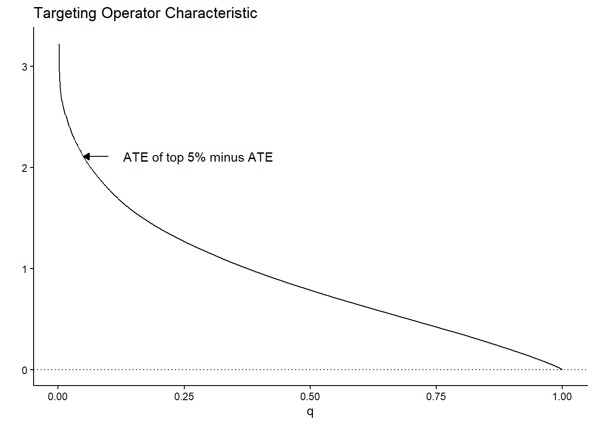
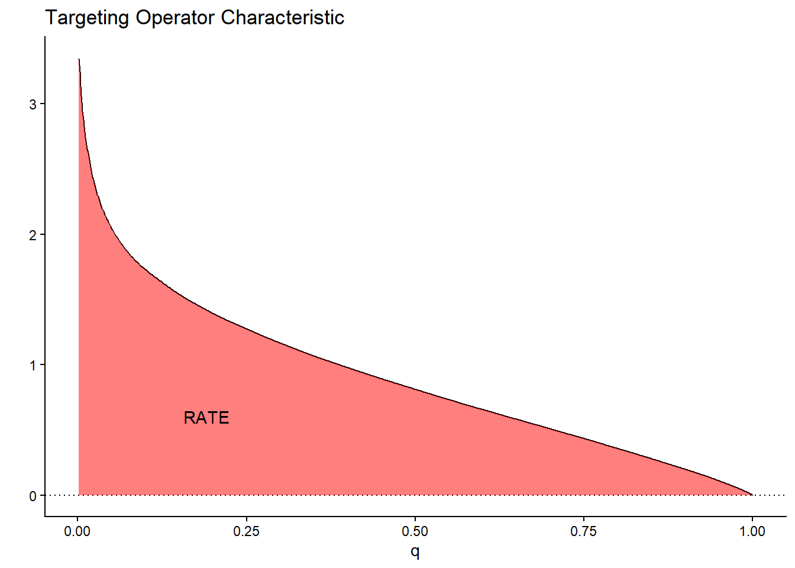
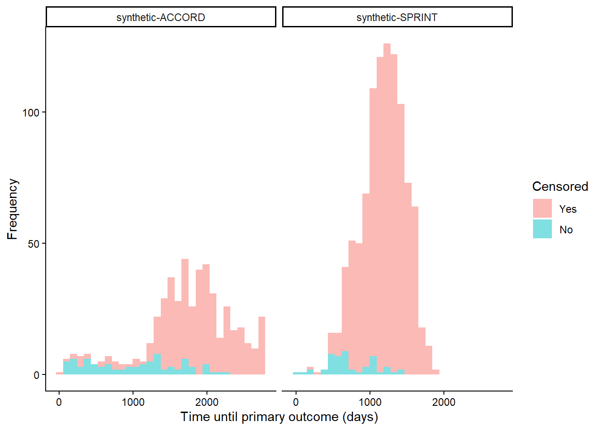
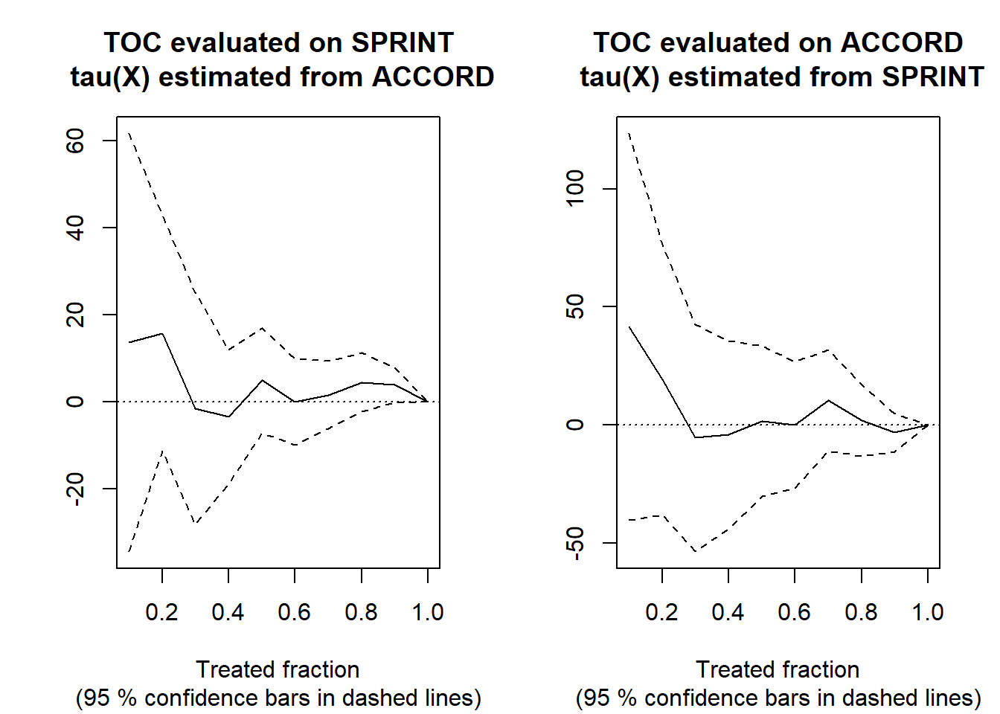

library(grf)
library(ggplot2)用 RATE 评估异质性
Assessing heterogeneity with RATE · grf 官方教程中译
来源：R 包 grf 官方教程
rate.Rmd（原文渲染版），作者 Julie Tibshirani、Susan Athey、Erik Sverdrup、Stefan Wager 等，采用 GPL-3 许可。 本页为中文翻译，非原文；按 GPL-3 保留原作者署名与许可证，并标明这是修改（翻译）后的版本。 译自 grf 2.6.1（源码修订5bee99b）。 页内代码与图表由本站以 R 4.4.3 + grf 2.6.1 重新执行生成，因随机种子与包版本差异，数值可能与原站略有出入。
本文简要介绍函数 rank_average_treatment_effect 提供的秩加权平均处理效应（RATE）：它可以用来评估处理优先级规则（例如条件平均处理效应的估计）区分不同处理效应亚群体的能力，也可以用来判断数据中是否存在明显的异质性。本文第二部分给出一个医学场景的完整示例，使用来自 SPRINT 和 ACCORD 两项降压药试验的（合成）数据。完整细节以及用 RATE 评估 uplift 模型的例子，请参见 RATE 论文。
处理优先级规则
我们处在熟悉的实验场景（或无混杂的观察性研究）中，关心的问题是：该把二值处理 \(W=\{0, 1\}\) 分配给哪些个体，以及这种处理分配策略的价值有多大。给定个体特征 \(X_i\)，我们有一个针对个体的处理优先级规则 \(S(X_i)\)，它给每个个体打分。这个优先级规则应当给我们认为处理获益大的个体高分，给获益小的个体低分。这里说的处理获益，指在给定个体特征 \(X_i\) 时接受处理带来的结局 \(Y\) 之差，也就是条件平均处理效应（CATE）
\[\tau(x) = E[Y_i(1) - Y_i(0) \,|\, X_i = x],\] 其中 \(Y(1)\) 和 \(Y(0)\) 是对应两种处理状态的潜在结果。
你可能会问：既然获益是用 \(\tau(X_i)\) 来衡量的，为什么还要泛泛地考虑任意规则 \(S(X_i)\)？难道估计出来的 CATE 不是最适合用来定向处理的吗？答案是这种一般化的问题表述很方便：在某些场景下，我们可能没有足够的数据来支撑一个准确的 CATE 估计量，只能依靠别的办法来定向处理。别的办法包括领域专家总结的经验规则，或者预测风险评分的简单模型（风险定义为 \(P[Y = 1 | X_i = x]\)，其中 \(Y \in \{0, 1\}\)，\(Y=1\) 表示不良结局），后者在临床应用中相当常见。因此在有限样本下，依赖与 CATE 相关的简单规则，有时比依赖含噪声又复杂的 CATE 估计更好（记住：CATE 估计是一个困难的统计任务；关注一般化的规则，等于把问题换成按处理获益给个体排序，从而绕开了获得准确非参数点估计的一些困难）。另外，即使你有准确的 CATE 估计量，可选的也可能有很多（神经网络／随机森林／各种 metalearner 等等）。问题在于：给定一组处理优先级规则 \(S(X_i)\)，我们该用哪一个（如果有的话）？
我们建议在这种情况下使用 RATE 指标。它的输入是一个优先级规则 \(S(X_i)\)（可以基于估计的 CATE、风险评分等等），输出是一个标量指标，用来评估这个规则定向处理的效果好坏（它衡量优先级规则的价值，而不关心规则是怎么得到的）。RATE 指标由两部分组成：“TOC”和 TOC 曲线下的面积，下一节会解释。
量化处理获益：定向算子特征（Targeting Operator Characteristic）
如上一节所述，我们关心是否存在异质性，以及用定向规则 \(S(X_i)\) 按这种异质性来安排处理优先级能带来多少获益。这里的“获益”指的是：把处理给分数 \(S(X_i)\) 最高的那部分人群，相比把处理随机给同样大小的一部分人群，结局的期望提升量。
要构造合适的指标来衡量这一点，先看图会有帮助。一个合理的做法是：按 \(S(X_i)\) 把人群切成若干组，把各组的 ATE 与给所有人处理得到的整体 ATE 作比较，再把结果对所有组画出来。这正是定向算子特征（TOC）所做的事，其中每一组是优先级分数 \(S(X_i)\) 最高的前 q 比例个体。
设 \(F\) 为 \(S(X_i)\) 的分布函数，\(q \in (0, 1]\) 为接受处理的样本比例，则 \(q\) 处的 TOC 定义为
\[\begin{equation*} \begin{split} &\textrm{TOC}(q) = E[Y_i(1) - Y_i(0) \,|\, S(X_i) \geq F^{-1}_{S(X_i)}(1 - q)]\\ & \ \ \ \ \ \ \ \ \ \ \ \ \ \ \ \ - E[Y_i(1) - Y_i(0)], \end{split} \end{equation*}\]
其中 \(F_{S(X_i)}\) 是 \(S(X_i)\) 的分布函数。TOC 曲线的想法来自受试者工作特征（ROC），后者是评估分类规则性能的常用指标。
举一个玩具例子：设 \(\tau(X_i) = X_1\)，其中 \(X_1 \sim N(0, 1)\)。那么用 \(S(X_i) = \tau(X_i)\) 排优先级时，TOC 曲线长这样：

注意最先接受处理的少数个体对应的 TOC 有多高。这很直观：玩具例子里的 CATE 服从均值为零的正态分布；如果我们只识别并处理效应大于 \(z_{0.95}\) 的前 5% 个体，相比给所有人处理（效应为 0）获益很大。随着比例继续增大，越来越多处理效应较低的人被混进来，结果就越来越接近 ATE，到 \(q=1\) 时正好相等。
RATE：TOC 曲线下的面积
这张图提示了一个很自然的办法，用来概括 TOC 曲线所反映的 \(S(X_i)\) 按处理获益排序个体的能力：把曲线下的面积加起来。RATE 正是这样定义的，即 Area Under the TOC（“AUTOC”）
\[\textrm{RATE} = \int_0^1 \textrm{TOC}(q) dq .\] 如果 \(\tau(X_i)\) 几乎没有异质性，这个面积会小到可以忽略；在 \(\tau(X_i)\) 为常数的特殊情形下，它等于零。往前想一步：如果我们估计出的规则 \(S(X_i)\) 能很好地识别出处理获益差异很大的个体，就应该期待这个指标是正的。反过来，如果规则表现很差，或者分层处理几乎没有好处，那么应该分别期待它是负的或接近零。

这块面积的求和方式不止一种，由此产生了不同的 RATE 指标。上面这个积分我们称为“AUTOC”。它给期望处理获益最大的那段曲线下面积更大的权重。当非零的处理效应集中在一小部分人群中时，这种加权方式在检验尖锐原假设（AUTOC = 0）时功效很高。
另一种求和方式是给曲线上每一点乘以权重 \(q\)：\(\int_0^1 q \textrm{TOC}(q) dq\)。这个指标我们称为“QINI”（Radcliffe, 2007）。这种加权方式意味着处理效应低的个体和处理效应高的个体获得同样的权重。当非零的处理效应在整个人群中分布得更弥散时，这种加权在检验无效应原假设时往往功效更高。
还有一点值得注意：Athey and Wager (2019) 中使用的“高对低”袋外 CATE 分位数构造也可以看成一种 RATE，只不过它把 Qini 的恒等加权换成了集中在 q = 某个给定分位数处的点质量。
估计 RATE
上一节的概述作了理想化的处理，假装我们知道 \(\tau(X_i)\)。实际中它必须被估计出来，相应的可行定义（以 \(S(X_i) = \hat \tau(X_i)\) 为例）是：TOC 曲线按训练集上估计出的 CATE 函数 \(\hat \tau^{train}(\cdot)\) 对测试集 \(X^{test}\) 上的所有观测排序，再把 \(\hat \tau^{train}(X^{test})\) 排在最前面的前 q 比例个体的 ATE 与整体 ATE 作比较：
\[\begin{equation*} \begin{split} &\textrm{TOC}(q) = E[Y^{test}_i(1) - Y^{test}_i(0) \,|\, \hat \tau^{train}(X^{test}_i) \geq \hat F^{-1}(1 - q)]\\ & \ \ \ \ \ \ \ \ \ \ \ \ \ \ \ \ - E[Y^{test}_i(1) - Y^{test}_i(0)], \end{split} \end{equation*}\]
其中 \(\hat F\) 是 \(\hat \tau^{train}(X^{test})\) 的经验分布函数。rank_average_treatment_effect 函数用在独立评估集上训练的森林，给出 TOC 和 RATE 的 AIPW 式1双稳健估计量。双稳健估计量的推导以及相应的中心极限定理，详见 Yadlowsky et al. (2025)。
一个 SPRINT 与 ACCORD 的应用
为了说明 RATE，我们看一个医学场景的应用例子。两项大型随机试验 ACCORD（ACCORD Study Group, 2010）和 SPRINT（SPRINT Research Group, 2015）在相似人群中开展，都用于测量某种降压治疗的有效性，却得到了不同的结论。SPRINT 发现该治疗有效，ACCORD 发现该治疗无效。人们提出了多种解释，这里只关注其中一种：差异源于处理效应异质性这一假说（相关文献见 Yadlowsky et al., 2025）。
按上一节的思路，这个假说有一个可检验的推论：如果确实存在显著的异质性，而且我们能用一个功效足够的 CATE 估计量把它有效地估计出来，那么在 ACCORD 和 SPRINT 上估计的 RATE 应该为正且显著。具体来说，我们的设定给出下面的做法：
在 ACCORD 和 SPRINT 数据上估计 CATE 函数 \(\hat \tau^{ACCORD}(\cdot)\) 和 \(\hat \tau^{SPRINT}(\cdot)\)。
用 \(\hat \tau^{ACCORD}(X^{SPRINT})\) 在 SPRINT 上评估 RATE，反过来也一样：用 \(\hat \tau^{SPRINT}(X^{ACCORD})\) 在 ACCORD 上评估 RATE。
如果两个人群表现出相似的 HTE，那么一个功效足够的 CATE 估计量应该给出为正且显著的 RATE 估计。
在本文的示例中，我们不分析 SPRINT/ACCORD 的原始数据，而是用一个规模更小的模拟例子，数据存放在 GRF 仓库。模拟器的细节见论文仓库。
该试验的结局数据是右删失的，所以不能用普通的“开箱即用”CATE 估计量来估计处理效应，而需要一个把删失考虑在内的估计量。因此我们使用 GRF 的 causal_survival_forest（细节见文档）。下面是模拟试验数据的示意图。
# Read in semi-synthetic data from https://github.com/grf-labs/grf/tree/master/r-package/grf/vignettes
load("data/synthetic_SPRINT_ACCORD.RData")
df <- data.frame(Y = c(Y.sprint, Y.accord),
D = c(D.sprint, D.accord),
data = c(rep("synthetic-SPRINT", length(Y.sprint)),
rep("synthetic-ACCORD", length(Y.accord))))
df$Censored <- factor(df$D, labels = c("Yes", "No"))
ggplot(df, aes(x = Y, fill = Censored)) +
facet_wrap(data ~ .) +
geom_histogram(alpha = 0.5, bins = 30) +
xlab("Time until primary outcome (days)") +
ylab("Frequency") +
theme_classic()
SPRINT 试验因为发生的事件数很少而提前终止，因此删失率非常高。本例关注的估计目标是给定协变量条件下限制平均生存时间（RMST）之差：
\[\tau(x) = E[T(1) \land h - T(0) \land h \, | X = x],\] 其中 \(T\) 是（删失的）生存时间，我们把 \(h\)（GRF 包中的 horizon）设为约 3 年，在那之后 SPRINT 试验数据几乎不再出现事件。由于处理是随机化的，我们把倾向评分 W.hat\(=E[W_i \, | X_i = x]\) 设为接受处理个体所占的平均比例。
horizon <- 3 * 365
csf.sprint <- causal_survival_forest(X.sprint, Y.sprint, W.sprint, D.sprint,
W.hat = mean(W.sprint), target = "RMST", horizon = horizon)
csf.accord <- causal_survival_forest(X.accord, Y.accord, W.accord, D.accord,
W.hat = mean(W.accord), target = "RMST", horizon = horizon)
tau.hat.sprint <- predict(csf.accord, X.sprint)$predictions
tau.hat.accord <- predict(csf.sprint, X.accord)$predictions用分别从 ACCORD 和 SPRINT 估计出的 CATE 函数，在 SPRINT 和 ACCORD 上评估 RATE，得到
rate.sprint <- rank_average_treatment_effect(csf.sprint, tau.hat.sprint, target = "AUTOC")
rate.accord <- rank_average_treatment_effect(csf.accord, tau.hat.accord, target = "AUTOC")
rate.sprint
#> estimate std.err target
#> 4.762887 6.228628 priorities | AUTOC
rate.accord
#> estimate std.err target
#> 2.244216 11.98976 priorities | AUTOCpar(mfrow = c(1, 2))
plot(rate.sprint, xlab = "Treated fraction", main = "TOC evaluated on SPRINT\n tau(X) estimated from ACCORD")
plot(rate.accord, xlab = "Treated fraction", main = "TOC evaluated on ACCORD\n tau(X) estimated from SPRINT")
在这个半合成的例子中，两个 AUTOC 在常规水平下都不显著，说明没有证据表明两项试验中存在显著的 HTE。注意：这也可能是由于 a) 功效不足，样本量或许不够大，检测不出 HTE；b) HTE 估计量没有把它们检测出来；或者 c) 处理效应沿可观测预测变量方向的异质性可以忽略不计。关于在 SPRINT 和 ACCORD 数据集上比较不同优先级策略的更广泛分析，见 Yadlowsky et al. (2025)。
关于不依赖单次训练集／测试集划分来估计 RATE 的其他做法，参见这篇文章。
资助
GRF 中 RATE 功能的开发部分由美国国立卫生研究院（National Institutes of Health）编号 5R01HL144555 的基金资助。
参考文献
ACCORD Study Group. Effects of Intensive Blood-Pressure Control in Type 2 Diabetes Mellitus. New England Journal of Medicine, 362(17):1575–1585, 2010.
Susan Athey and Stefan Wager. Estimating Treatment Effects with Causal Forests: An Application. Observational Studies, 5, 2019.
Radcliffe, Nicholas. Using control groups to target on predicted lift: Building and assessing uplift model. Direct Marketing Analytics Journal (14-21), 2007.
SPRINT Research Group. A Randomized Trial of Intensive Versus Standard Blood-Pressure Control. New England Journal of Medicine, 373(22):2103–2116, 2015.
Yadlowsky, Steve, Scott Fleming, Nigam Shah, Emma Brunskill, and Stefan Wager. Evaluating Treatment Prioritization Rules via Rank-Weighted Average Treatment Effects. Journal of the American Statistical Association, 120(549), 2025 (arxiv)
AIPW = Augmented Inverse-Propensity Weighting，即增广逆倾向加权 (Robins, Rotnitzky, and Zhao, 1994)↩︎